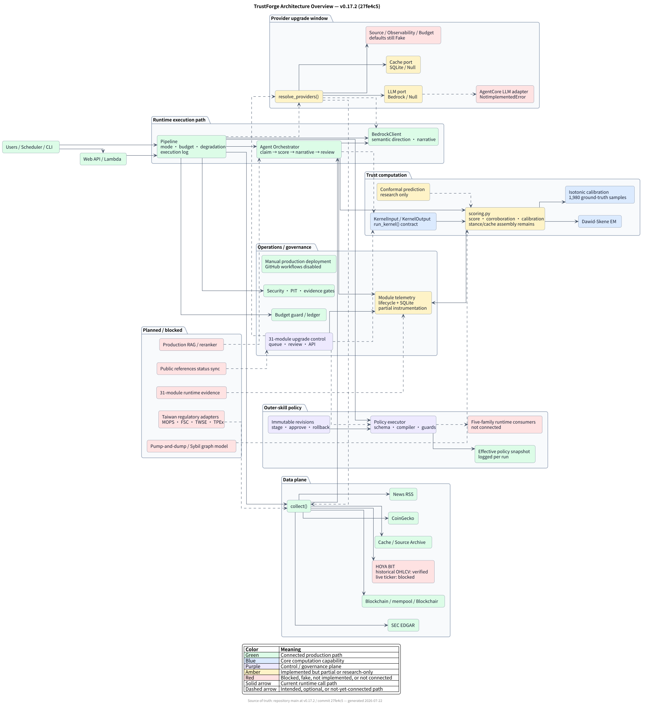
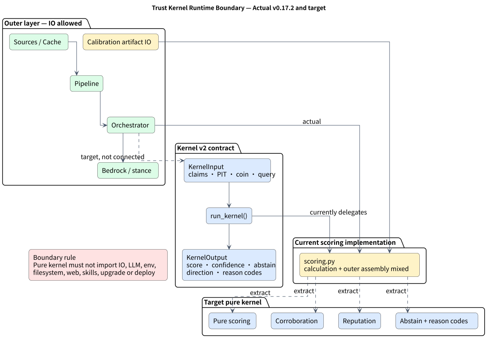
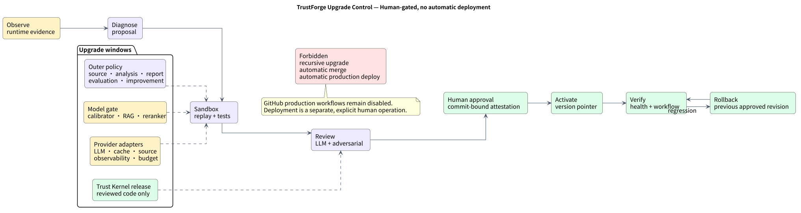
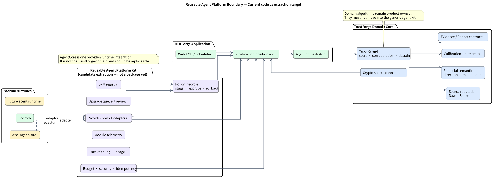

適合跨專案共用
- Provider ports 與 adapters
- Policy stage／approve／rollback
- Module telemetry 與 execution log
- Upgrade queue／review
- Budget、安全與 idempotency gates
- Skill registry
Architecture / Verified implementation map
系統執行路徑、Trust Kernel 邊界、升級控制，以及可抽成跨專案共用 Agent Platform 的能力。圖中刻意區分「已接線」與「只有介面」。
正式資料流由左至右；治理能力以 sidecar 方式接入，不與 Trust Domain 混為一體。

Kernel v2 已有輸入輸出契約，但 production orchestrator 尚未以 run_kernel() 為入口，核心仍委派給混合 outer assembly 的 scoring.py。

Provider、Policy、Model 與 Kernel 有不同升級窗口，但都必須經 sandbox、review 與人類核准。

AgentCore 是可替換 runtime/provider，不是 TrustForge Domain。跨專案能力應抽到獨立 platform kit，金融信任演算法則留在產品核心。

可編輯來源： System PUML · Kernel PUML · Upgrade PUML · Platform PUML · Markdown notes